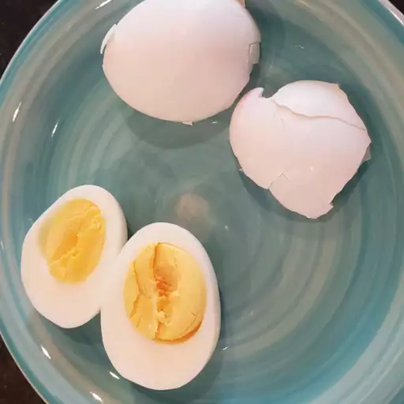

Eggs Recipe

Simply boiled eggs.
This is a quick and easy recipe for someone who is short on time to cook.
Ingredients
- 1 tablespoon salt
- 1/4 cup distilled white vinegar
- 6 cups water
- 8 large eggs
Steps
- Combine salt, vinegar, and water in a large pot, and bring to a boil over high heat.
- Add eggs one at a time, being careful not to crack them. Reduce the heat to a gentle boil, and cook for 14 minutes.
- Once eggs have cooked, remove them from the hot water, and place into a container of ice water or cold, running water. Cool completely, about 15 minutes. Store in the refrigerator up to 1 week.